국가대표
홈
>
후원선수
>
국가대표
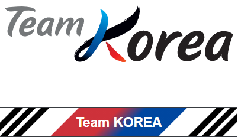
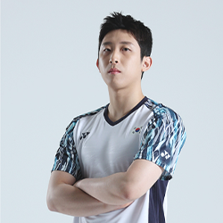
허광희
heog wang hui
1995.08.11 · 180cm · 오른손

주요 경력
- 2021 프랑스 오픈 배드민턴 선수권 대회 남자 단식 3위
- 2021 세계 혼합 단체 배드민턴 선수권 대회 혼합 단체 3위
-
2020 제 63회 전국 여름철 종별 배드민턴 선수권 대회
남자 일반부 단체 3위 - 2019 셰드모디 국제 배드민턴 선수권 대회 남자 단식 3위
- 2019 제 7회 세계 군인 체육대회 단식 1위
- 2019 대만 오픈 배드민턴 선수권 대회 남자 단식 2위
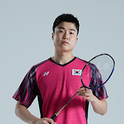
전혁진
jeon hyeog jin
1995.06.13 · 177cm · 오른손
주요 경력
-
2022 광주 요넥스 코리아 마스터즈 배드민턴 선수권
대회 남자 단식 우승 - 2022 아시아 남여 단체 배드민턴 선수권 대회 남자 단식 3위
-
2021 전국실업대항 및 학교대항(대학) 배드민턴 선수권
대회 남자 일반부 단체 3위 - 2021 세계 혼합단체 배드민턴 선수권 대회 혼합 단체 3위
- 2021 제 50회 전국 소년 체육대회 남자 일반부 단체 3위
-
2020 전국실업대항 배드민턴 선수권 대회 남자 일반부
개인전 단식 우승
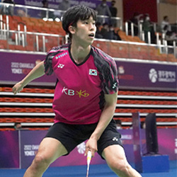
김동훈
kim dong hun
1993.09.15 · 177cm · 왼손
주요 경력
-
2021 전국실업대항 및 학교대항(대학) 배드민턴 선수권
대회 남자 일반부 단체 1위 - 2021 정향누리 전국 가을철 배드민턴 선수권 대회 남자 일반부 단식 2위
- 2021 제 102회 전국 체육대회 남자 일반부 단체 1위
- 2021 제 50회 전국 소년 체육대회 남자 일반부 단식 3위
-
2021 전국 동계 대학 실업 배드민턴 선수권 대회 남자
일반부 단체 1위 -
2020 회장기 전국 대학 실업 배드민턴 연맹전 남자 일반부
단식 1위 / 단체 3위
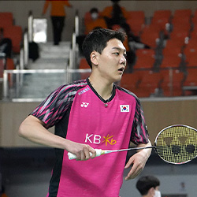
이윤규
lee yun gyu
1997.11.01 · 183cm · 오른손
주요 경력
- 2021 제 102회 전국 체육 대회 남자 일반부 단체 2위
-
2020 전국 실업 대항 배드민턴 선수권 대회 남자 일반부
단체 2위 -
2020 제 63회 전국 여름철 종별 배드민턴 선수권 대회
남자 일반부 단체 2위 - 2019 제 100회 전국 체육 대회 남자 일반부 단체 3위
-
2019 전국 가을철 종별 배드민턴 선수권 대회 남자
일반부 단식 1위 - 2019 제 57회 전국 봄철 종별 배드민턴 리그전 남자 일반부 단체 3위
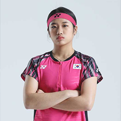
안세영
an sey eong
2002.02.05 · 170cm · 오른손
주요 경력
-
2022 광주 요넥스 코리아 마스터즈 배드민턴 선수권
대회 여자단식 3위 - 2022 코리아 오픈 배드민턴 선수권 대회 여자 단식 1위
- 2022 전영 오픈 배드민턴 선수권 대회 여자 단식 2위
- 2022 독일 오픈 배드민턴 선수권 대회 여자 단식 3위
- 2021 bwf 배드민턴 월드투어 파이널 여자 단식 1위
- 2021 인도네시아 오픈 배드민턴 선수권 대회 여자 단식 1위
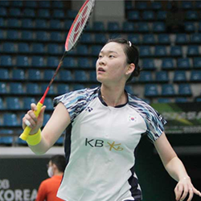
김가은
kim ga eun
1998.02.07 · 173cm · 오른손
주요 경력
- 2022 코리아 오픈 배드민턴 선수권 대회 여자 단식 3위
- 2021 제 28회 세계 여자 단체 배드민턴 선수권 대회 여자 단체 3위
- 세계 혼합 단체 배드민턴 선수권 대회 혼합 단체 3위
- 2020 제 63회 전국 여름철 종별 배드민턴 선수권 대회 여자 일반부 단체 1위
-
2020 아시아 남여 단체 배드민턴 선수권 대회 여자
단체 2위
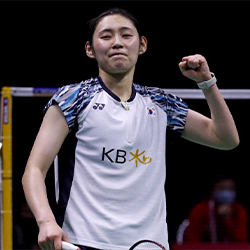
심유진
sim yu jin
1999.05.13 · 172cm · 오른손
주요 경력
-
2022 아시아 남여 단체 배드민턴 선수권 대회 여자
단체 2위 - 2021 제 28회 여자 단체 배드민턴 선수권 대회 3위
- 2021 제 102회 전국 체육 대회 여자 일반부 단체 1위
- 2021 제 50회 전국 소년 체육 대회 여자 일반부 단식 3위
-
2020 제 58회 전국 봄철 종별 배드민턴 리그전 - 대일
여자 일반부 단체 1위 - 2020 아시아 남여 단체 배드민턴 선수권 대회 여자 단체 2위
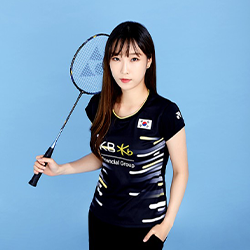
전주이
jeon joo i
1995.03.04 · 169cm · 오른손
주요 경력
-
2021 제 28회 세계 여자 단체 배드민턴 선수권 대회 여자
단체 3위 - 2021 정향누리 전국 가을철 배드민턴 선수권 대회 여자 일반부 단식 3위 / 단체 2위
- 2021 제 50회 전국 소년 체육대회 여자 일반부 단체 3위
- 2021 전국 동계 대학 실업 배드민턴 선수권 대회 여자 일반부 단식 1위
-
2020 전국 실업 대항 배드민턴 선수권 대회 여자 일반부
단체 3위 - 2020 제 58회 전국 봄철 종별 배드민턴 리그전 여자 일반부 단체 3위
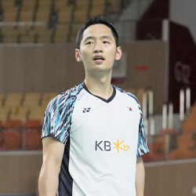
최솔규
choi sol gyu
1995.08.05 · 180cm · 오른손
주요 경력
-
2022 광주 요넥스 코리아 마스터즈 배드민턴 선수권
대회 남자 복식 3위 - 2021 세계 혼합 단체 배드민턴 선수권 대회 3위
- 2021 제 102회 전국 체육 대회 남자 일반부 복식 2위
- 2021 bwf 배드민턴 월드 투어 파이널 남자 복식 3위
-
2021 yonex 태국 오픈 배드민턴 선수권 대회 남자
복식 3위 -
2020 전국 실업 대항 배드민턴 선수권 대회 남자 일반부
단체 3위 / 복식 1위
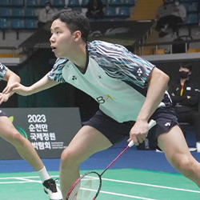
서승재
seo seung jae
1997.09.04 · 182cm · 왼손
주요 경력
-
2022 광주 요넥스 코리아 오픈 배드민턴 선수권 대회
남자 복식 우승 - 2021 세계 혼합 단체 배드민턴 선수권 대회 3위
-
2021 bwf 배드민턴 월드 투어 파이털 남자 복식 3위
/ 혼합 복식 2위 -
2021 toyota 태국 오픈 배드민턴 선수권 대회
혼합 복식 2위 -
2021 yonex 태국 오픈 배드민턴 선수권 대회 남자
복식 3위 / 혼합 복식 3위 -
2020 제 63회 전국 여름철 종별 배드민턴 선수권
대회 남자 일반부 단체 3위 / 복식 1위
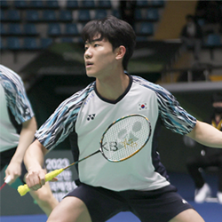
강민혁
kang min hyuk
1999.02.17 · 184cm · 오른손
주요 경력
-
2022 광주 요넥스 코리아 오픈 배드민턴 선수권 대회
남자 복식 우승 - 2021 세계 혼합 단체 배드민턴 선수권 대회 혼합단체 3위
- 2021 제 50회 전국 소년 체육 대회 남자 일반부 복식 1위
- 2020 제 63회 전국 여름철 종별 배드민턴 선수권 대회 남자 일반부 단체 3위
-
2020 제 58회 전국 봄철 종별 배드민턴 리그전 남자
일반부 단체 1위
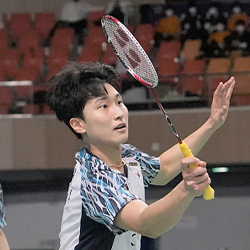
김원호
kim won ho
1999.09.02 · 184cm · 오른손
주요 경력
-
2022 광주 요넥스 코리아 오픈 배드민턴 선수권 대회
남자 복식 3위 - 2021 세계 혼합 단체 배드민턴 선수권 대회 혼합단체 3위
-
2021 제 50회 전국 소년 체육 대회 남자 일반부
복식 1위 / 혼합 복식 2위 - 2020 제 63회 전국 여름철 종별 배드민턴 선수권 대회 남자 일반부 단체 3위 / 복식 1위
-
2020 제 58회 전국 봄철 종별 배드민턴 리그전 남자
일반부 단체 1위
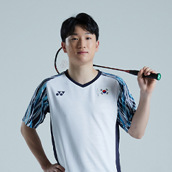
진 용
jin young
2003.04.08 · 172cm · 왼손
주요 경력
-
2022 광주 요넥스 코리아 마스터즈 배드민턴 선수권 대회
혼합 복식 3위 - 2022 아시아 남여 단체 배드민턴 선수권 대회 남자 단체 3위
-
2021 제 102회 전국 체육 대회 남자 고등부 단체 1위
/ 복식 1위 - 2021 제 50회 전국 소년 체육 대회 남자 고등부 단식 2위
-
2021 한국 중·고배드민턴 연맹 회장기 전국 학생
선수권
대회 남자 고등부 단식 2위 / 복식 1위 - 2019 대만 오픈 배드민턴 선수권 대회 남자단식 2위
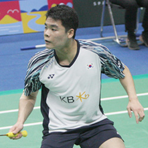
나성승
na sung seung
1999.08.28 · 169cm · 오른손
주요 경력
-
2022 아시아 남여 단체 배드민턴 선수권 대회 남자
단체 3위 -
2021 정향누리 전국 가을철 배드민턴 선수권 대회 남자
일반부 복식 2위 - 2021 제 102회 전국 체육 대회 남자 일반부 단체 2위
- 2021 제 50회 전국 소년 체육 대회 남자 일반부 복식 2위
-
2020 회장기 전국 대학 실업 배드민턴 연맹전 남자
일반부 복식 1위 - 2020 제 63회 전국 여름철 종별 배드민턴 선수권 대회 남자 일반부 복식 2위
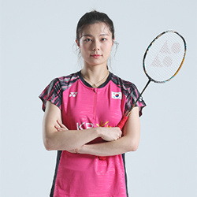
김소영
kim so yeong
1992.07.09 · 173cm · 오른손
주요 경력
-
2022 광주 요넥스 코리아 마스터즈 배드민턴 선수권
대회 여자복식 우승 - 2021 세계 개인 배드민턴 선수권 대회 여자 복식 3위
- 2021 bwf 배드민턴 월드 투어 파이널 여자 복식 1위
- 2021 프랑스 오픈 배드민턴 선수권 대회 여자 복식 2위
-
2021 toyota 태국 오픈 배드민턴 선수권 대회 여자
복식 1위 - 2021 덴마크 오픈 배드민턴 선수권 대회 여자 복식 3위
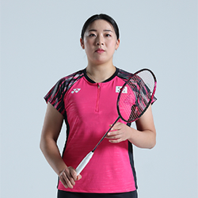
공희용
kong hee young
1996.12.11 · 166cm · 오른손
주요 경력
-
2022 광주 요넥스 코리아 마스터즈 배드민턴 선수권
대회 여자복식 우승 - 2021 세계 개인 배드민턴 선수권 대회 여자 복식 3위
- 2021 bwf 배드민턴 월드 투어 파이널 여자 복식 1위
- 2021 프랑스 오픈 배드민턴 선수권 대회 여자 복식 2위
-
2021 toyota 태국 오픈 배드민턴 선수권 대회 여자
복식 1위 - 2021 덴마크 오픈 배드민턴 선수권 대회 여자 복식 3위
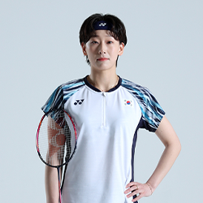
이소희
lee so hee
1991.06.11 · 172cm · 오른손
주요 경력
- 2021 세계 개인 배드민턴 선수권 대회 여자 복식 2위
- 2021 프랑스 오픈 배드민턴 선수권 대회 여자 복식 1위
-
2021 제 28회 세계 여자 단체 배드민턴 선수권 대회
여자 단체 3위 - 2021 세계 혼합 단체 배드민턴 선수권 대회 혼합 단체 3위
-
2021 제 102회 전국 체육 대회 여자 일반부 단체 1위
/ 복식 1위 - 2021 bwf 배드민턴 월드 투어 파이널 여자 복식 1위
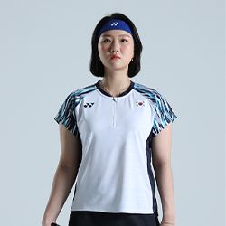
신승찬
shin seung chan
1994.12.06 · 173cm · 오른손
주요 경력
- 2021 세계 개인 배드민턴 선수권 대회 여자 복식 2위
- 2021 프랑스 오픈 배드민턴 선수권 대회 여자 복식 1위
-
2021 제 28회 세계 여자 단체 배드민턴 선수권 대회
여자 단체 3위 - 2021 세계 혼합 단체 배드민턴 선수권 대회 혼합 단체 3위
-
2021 제 102회 전국 체육 대회 여자 일반부 단체 1위
/ 복식 1위 - 2021 bwf 배드민턴 월드 투어 파이널 여자 복식 1위
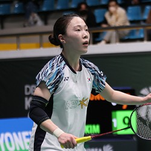
김혜정
kim hye jeong
1998.01.03 · 161cm · 오른손
주요 경력
- 2022 코리아 오픈 배드민턴 선수권 대회 여자 복식 우승
- 2021 인도네시아 마스터즈 배드민턴 선수권 대회 여자 복식 2위
-
제 50회 전국 소년 체육대회 여자 일반부 단체 2위 / 복식
2위 - 2020 회장기 전국 대학 실업 배드민턴 여자 일반부 단체 1위
-
2020 제 63회 전국 여름철 종별 배드민턴 선수권 대회
여자 일반부 단체 2위 - 2020 제 58회 전국 봄철 종별 배드민턴 리그전 여자 일반부 단체 3위
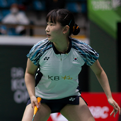
정나은
heog wang hui
2000.06.27 · 166cm · 오른손
주요 경력
- 2022 코리아 오픈 배드민턴 선수권 대회 여자 복식 우승
- 2021 인도네시아 마스터즈 배드민턴 선수권 대회 여자 복식 2위
-
2021 정향누리 전국 가을철 배드민턴 선수권 대회 여자
일반부 단체 2위 / 일반부 혼합 복식 2위 - 2021 제 102회 전국 체육 대회 여자 일반부 복식 3위
-
2021 제 50회 전국 소년 체육 대회 여자 일반부 단체 3위
/ 복식 3위 / 일반부 혼합 복식 3위 - 2021 전국 동계 대학 실업 배드민턴 선수권 대회 여자 일반부 복식 1위
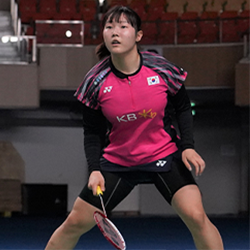
백하나
baek ha na
2000.09.22 · 165cm · 오른손
주요 경력
-
2022 광주 요넥스 코리아 마스터즈 배드민턴 선수권
대회 여자 복식 2위 - 2022 아시아 남여 단체 배드민턴 선수권 대회 여자 단체 2위
-
2021 제 50회 인도네시아 배드민턴 선수권 대회 여자
복식 3위 - 2021 전향누리 전국 가을철 배드민턴 선수권 대회 여자 일반부 단체 1위 / 복식 1위
- 2021 제 102회 전국 체육 대회 여자 일반부 단체 2위
- 2021 제 50회 전국 소년 배드민턴 여자 일반부 단체 3위 / 복식 3위
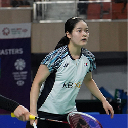
이유림
lee yu lim
2000.01.29 · 160cm · 오른손
주요 경력
-
2022 광주 요넥스 코리아 마스터즈 배드민턴 선수권 대회
여자 복식 2위 / 혼합 복식 3위 - 2021 인도네시아 오픈 배드민턴 선수권 대회 여자 복식 3위
- 2021 제 50회 전국 소년 체육 대회 여자 일반부 단체 2위 / 여자 복식 2위 / 일반부 혼합 복식 2위
- 2020 전국 실업 대항 배드민턴 선수권 대회 여자 일반부 복식 3위
- 2020 제 63회 전국 여름철 종별 배드민턴 선수권 대회 여자 일반부 단체 1위